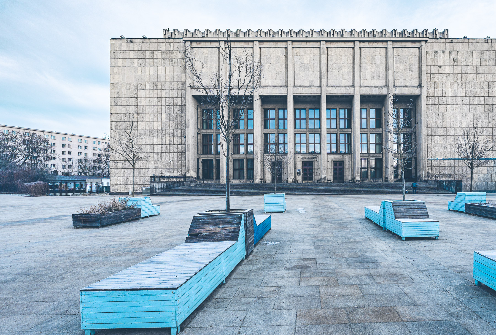
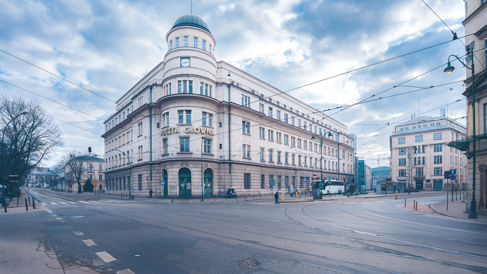
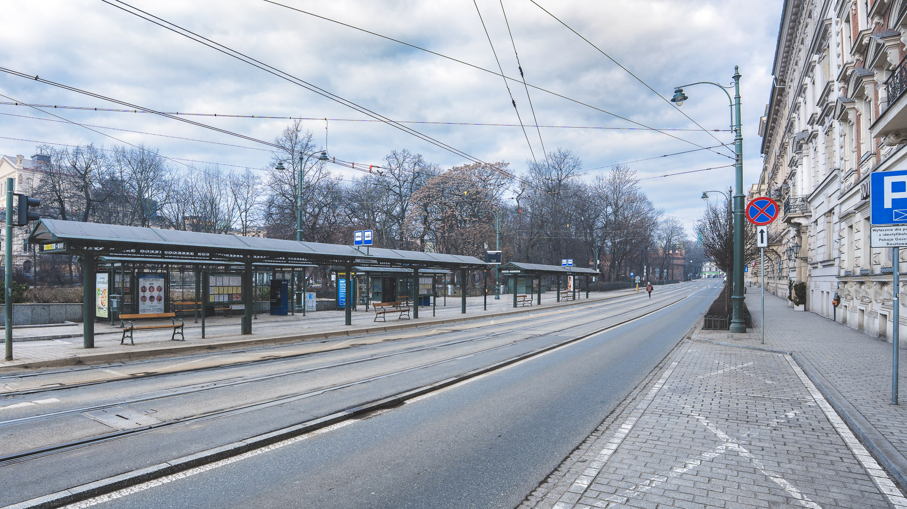

Kraków Minus
This is a place for an ongoing project with the working title "Kraków Minus". A photo series of Krakow, Poland, showcasing public spaces - places that are usually packed with people and vehicles - appearing completely empty in the pictures. Various techniques were used to achieve this effect: multiple exposures, long-exposure shots, sometimes proper timing, or just plain good luck.
Inspired by Lucie and Simon's "Memories of a Silent world."


